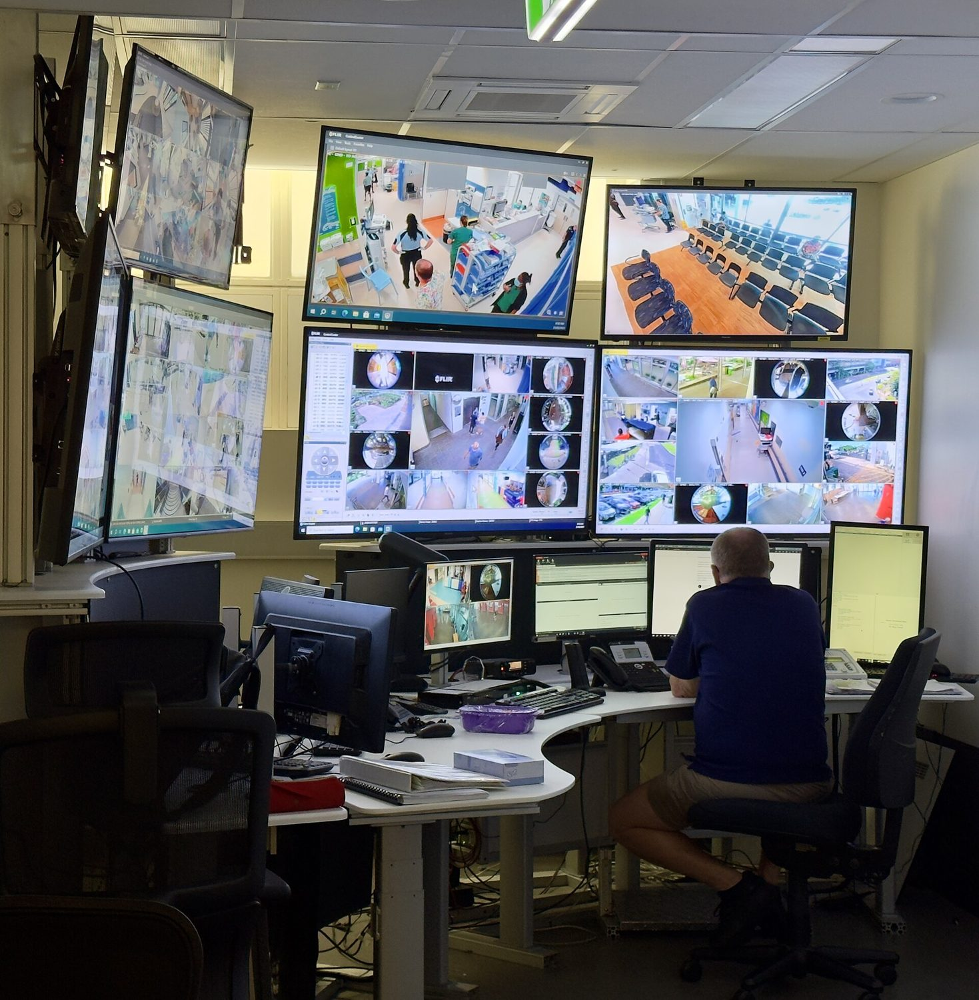

Set the site rules
Choose the cameras, operating hours and events the site is authorized to monitor.
DATA IN
Open the review workspace Authorized camera streams and site event rules
REVIEWED OUTPUTA timestamped event clip and reason for review
For security operators managing warehouses and commercial sites. Watchpost looks for events such as an open service gate or movement in a closed area, then gives the supervisor a timestamped review queue.
 CAMERA INFRASTRUCTURE
CAMERA INFRASTRUCTURE
SUPERVISOR REVIEW ENVIRONMENTThese are sample event records. The photographs show the operating context; no live camera feed is connected to this public workspace.
The prepared record flags an open service gate.
Keep the related observations in one review window.
Check the video evidence and record the response.
No face identification or automatic emergency dispatch. A supervisor verifies every event and follows the site’s response procedure.
Choose the cameras, operating hours and events the site is authorized to monitor.
Authorized camera streams and site event rules
REVIEWED OUTPUTA timestamped event clip and reason for review
Change camera count, operating hours and frame sampling rate. This capacity tool does not connect a video feed or claim measured detection performance.
AI checks site video for defined events and sends supervisors the relevant clip. Choose a sample case and inspect the evidence behind the finding.
Camera 03 observes the service gate open during the site’s configured closed period. The prepared event window runs from 07:14 to 07:16. No identity is inferred.
Evidence is prepared for this demonstration. Use the source reference to check the finding.See how the source becomes a specific question, a cited observation and a next action.
No face identification or automatic emergency dispatch. A supervisor verifies every event and follows the site’s response procedure.
Evidence-linked cases, retained reports, downloads and an operational register are implemented. Azure OpenAI and OpenAI service adapters are available; connected analysis requires a configured deployment.
Follow the development stagesAgree the baseline and review the result with the person responsible for the work.
Compare event windows with supervisor-reviewed occurrences.
Evaluate authorized labelled footage by site, lighting and event rule.
Include opening the evidence and recording the site’s response.
Compare two time assumptions for event reviews. The estimate is calculated from your entries; it is not a measured customer result.
No face identification or automatic emergency dispatch. A supervisor verifies every event and follows the site’s response procedure.